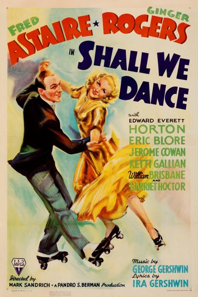

Shall We Dance

Starring: Fred Astaire, Ginger Rogers, Eric Blore
Director: Mark Sandrich
Writer: Allan Scott
Producer: Pandro S. Berman
Shall We Dance is a 1937 American musical comedy film directed by Mark Sandrich. It is the seventh of the ten Fred Astaire-Ginger Rogers films. The story follows a Russian-imposter ballet dancer (Astaire) who falls in love with a tap dancer (Rogers); the tabloid press concocts a story of their marriage, after which life imitates art.
Trivia
- The idea for the film originated in the studio's desire to exploit the successful formula created by Richard Rodgers and Lorenz Hart with their 1936 Broadway hit On Your Toes.
- In a major coup for RKO, Pandro Berman managed to attract the Gershwins – George Gershwin, who wrote the symphonic underscore, and Ira Gershwin, the lyrics – to score this, their second Hollywood musical after Delicious in 1931.
- The film – Astaire and Rogers's most expensive to date – features well-known comedic actors in support, art direction by Carroll Clark under Van Nest Polglase's supervision, and a score which introduces three Gershwin songs that went on to become classics.
Previous Showings
17 Runs • 11 Festivals
Original Billings: 1 run (June 1, 1937)
Original Run: June 1, 1937 (Tuesday - Saturday)
All runs on record (17):
- June 1, 1937 (Tuesday - Saturday)Fred Astaire, Ginger Rogers
- July 12 - 13, 1987w/ Follow the Fleet, Swing Time, Roberta, Carefree, Flying Down to Rio, You'll Never Get Rich
- June 15 - 16, 1990w/ Carefree
- January 23 - 26, 1993w/ Carefree
- August 17 - 18, 1995w/ Lady in the Dark
- November 8 - 10, 1996w/ Stage Door
- November 14 - 17, 1998Romantic Comedy Seriesw/ The Awful Truth
- April 7, 2001Hollywood Musicals, 1929-1939w/ Big Broadcast of 1937
- September 25 - 27, 2002Fall Folliesw/ Christmas in July
- December 15 - 16, 2004Marlon Brando: His First Decade in Films, plus Nine Musicals with Fred Astaire aw/ A Damsel in Distress
- April 14 - 15, 2007Film Noir, Val Lewton, 1930s musicals and more!w/ Topper
- July 12, 2007Summer 2007, including Films Starring Fred Astairew/ Follow the Fleet
- September 8 - 10, 2010Summer 2010w/ The Sky's the Limit
- May 28 - 30, 2014Fred Astaire 2014w/ Carefree
- December 16 - 18, 2016Astaire and Rogers plus The Marx Brothersw/ Monkey Business
- March 15 - 17, 2024Fred Astaire 2024w/ Follow the Fleet
- June 5 - 6, 2025Fred Astaire 2025w/ You Were Never Lovelier